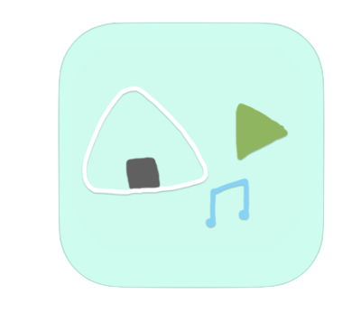

Onigiri Media Player

Onigiri Media Playerではデバイス内のミュージックライブラリにアクセスして、音楽を再生します。
ミュージックライブラリに変更を加えたりはできませんので、ご安心ください。
プライバシーポリシー
Onigiri Media Playerでは個人情報を取り扱うプログラムを実装しておりません。
なので、Onigiri Media Playerをダウンロードしてくださった方の個人情報などはこちら側で扱うことが
できませんので、ご安心ください。
このアプリを開発するときに利用した素材
charat
いらすとや